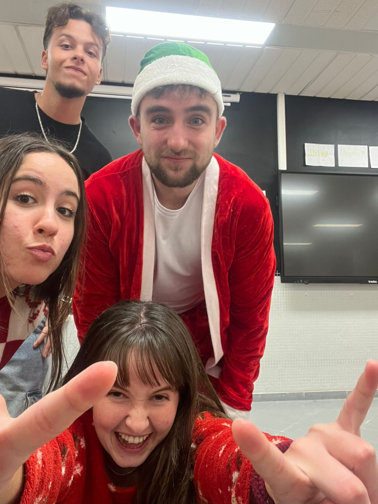
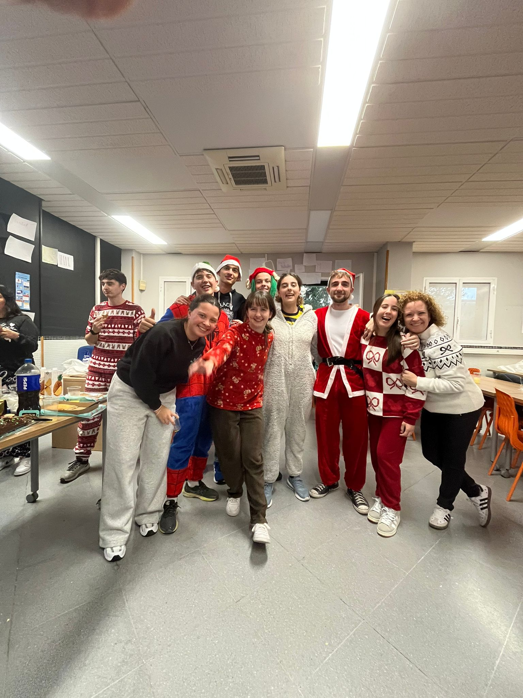
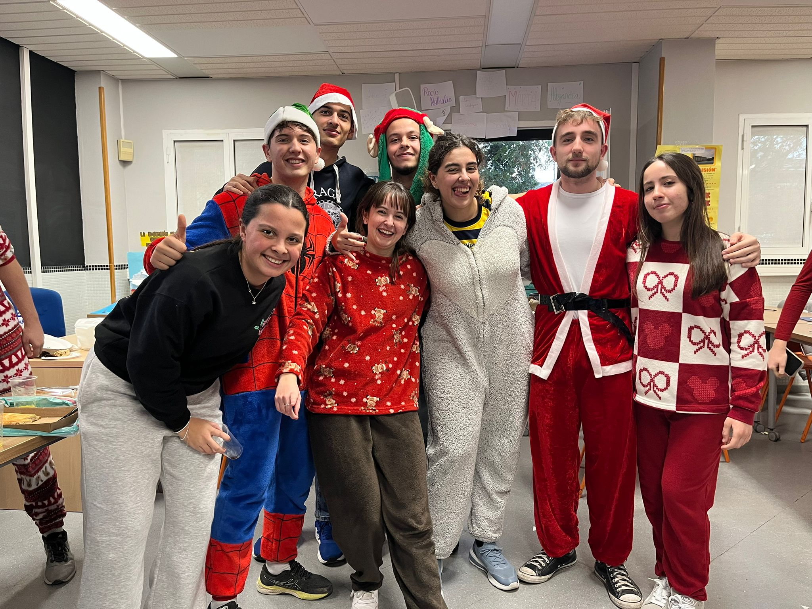
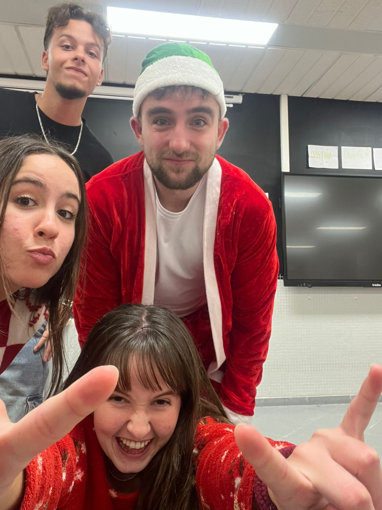
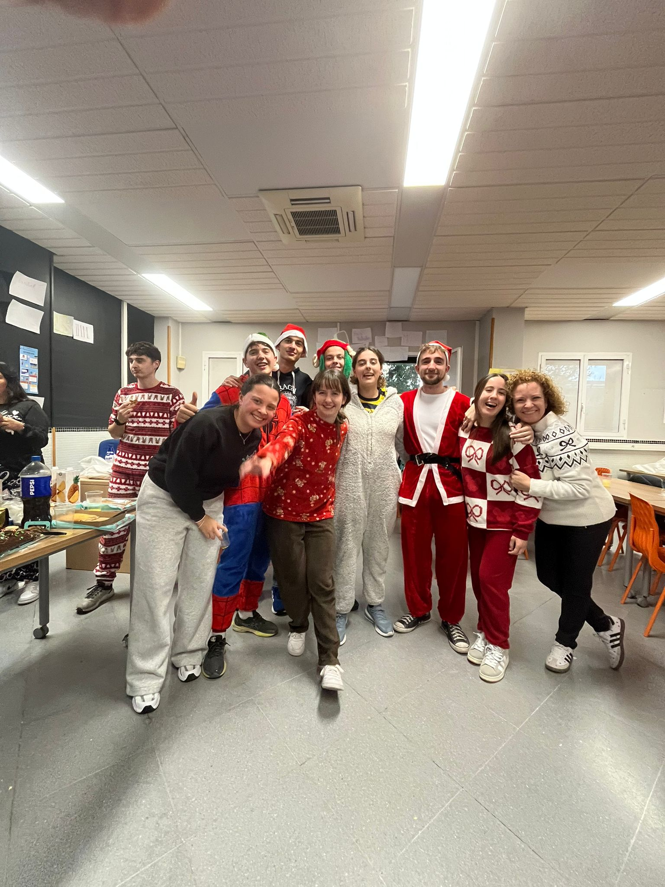
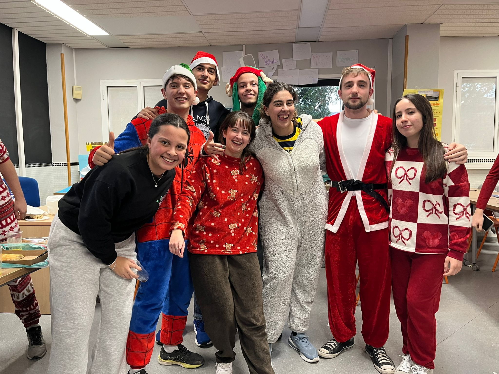

Sesión 15 · Puesta en común de trabajos (II)
Metodologías activas e innovación educativa
En esta sesión continuamos con la exposición de los trabajos finales realizados por los distintos grupos de la clase. Las presentaciones se centraron en metodologías activas y enfoques innovadores que sitúan al alumnado como protagonista de su propio aprendizaje.
Educanenas y Carlitosjojo · Constructivismo y aprendizaje cooperativo
Este grupo abordó el constructivismo como base del aprendizaje, defendiendo que el conocimiento se construye activamente a partir de la experiencia y la interacción. Además, destacaron el aprendizaje cooperativo como una estrategia fundamental para fomentar la participación y el desarrollo de habilidades sociales.
Lady Girls Power · Gamificación
Expusieron la gamificación como una metodología innovadora que utiliza elementos del juego para aumentar la motivación y el compromiso del alumnado, haciendo el aprendizaje más dinámico y significativo.
Maestras en Acción · Método Montessori
Presentaron el Método Montessori, destacando la autonomía del alumnado, el respeto a los ritmos individuales y la importancia del ambiente preparado como base del aprendizaje.
Educar no es transmitir conocimientos, sino crear las condiciones para que el aprendizaje ocurra.
Las exposiciones reforzaron la importancia de apostar por metodologías activas, inclusivas y centradas en el desarrollo integral del alumnado.
Cierre del trimestre · Merienda navideña
Tras finalizar las exposiciones, compartimos un momento distendido con motivo del cierre del trimestre mediante una merienda navideña. Cada persona aportó dulces y aperitivos, creando un ambiente de convivencia y celebración.
La mayoría del grupo acudió vestido con pijamas y ropa navideña, lo que contribuyó a generar un clima cercano, relajado y de cohesión grupal. Este tipo de espacios informales fortalecen las relaciones interpersonales y refuerzan el sentimiento de grupo dentro del aula.
Evidencias de la merienda
En este apartado se incluirán algunas fotografías del momento compartido durante la merienda navideña.
 




